The patients who benefit the most from AMIGO are in whom the distinction between tumor and brain and between different critical brain regions is most difficult. This occurs particularly in patients who have low grade gliomas, because although visible on certain imaging sequences, these tumors are nearly indistinguishable from surrounding brain during surgery even through the operating microscope. Moreover, visually all of the cortex and white matter look the same, and the surgeon can not discern the presence of white matter tracts or important areas during resection. In the AMIGO suite we can tie together preoperative mapping, accomplish intraoperative electrophysiology mapping, and obtain new US, MR, CT and PET images as needed.
Brain Tumor Resection Workflow in AMIGO
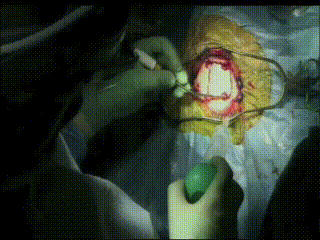
Craniotomy
Image guidance is used to perform a minimal craniotomy with optimized exposure of the lesion.
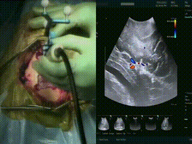
Ultrasound
When the dura is exposed, US is performed prior to making any incisions. US provides a fast initial orientation, including the location of major blood vessels. On left, the surgeon is using the BrainLab navigation system integrated with the BK US, and on the right is US with color doppler mode.
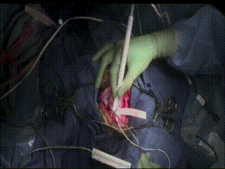
ECS
In a very small subset of cases, after the dura is opened and the cortex is exposed, intracranial electrical stimulation testing (ECS) is performed. ECS uses voltage applied directly to the cortex to map important functional areas. This is valuable in confirming and applying preoperative fMRI findings.
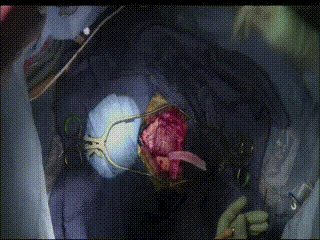
Navigation
Information is available to the surgeon about location and trajectory of her tools.oughout the procedure, the pre-operative multimodal image data is used to navigate.
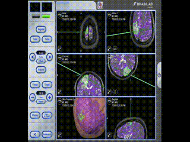
Navigation
Information is available to the surgeon about location and trajectory of her tools.mage guidance is used to perform a minimal craniotomy with optimized exposure of the lesion.
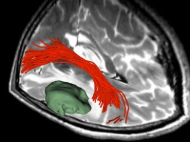
Tractography
Visualization of the tumor relative to the arcuate fasciculus white matter tract.
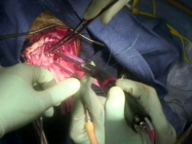
Gross Mass Removal
Ablation and aspiration of tissue is shown.
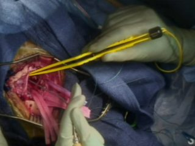
Gross Mass Removal
Image guidance makes effective tumor resection possible.
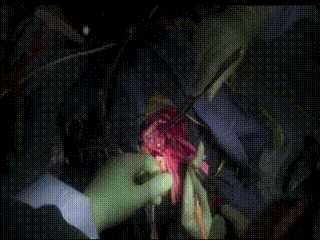
Gross Mass Removal
Image guidance makes effective tumor resection possible.
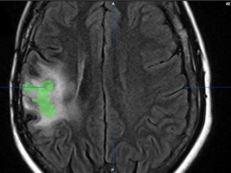
Tumor Assessment
The tumor is contoured in green on the pre-op MRI image.
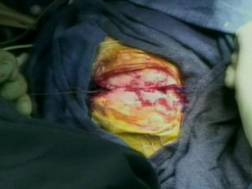
Intraoperative MR
Prior to intraoperative MRI, a temporary closure is performed.
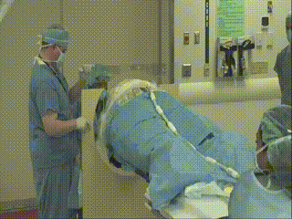
Intraoperative MR
A ceiling mounted high field (3T) MR scanner is then brought into the OR.
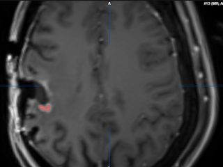
Assessment of Residual Tumor
The residual tumor is contoured in red.
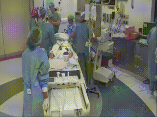
Closure and Post Operative Confirmatory Imaging
Once the surgeon is satisfied with the extent of tumor resection, the dura is stitched, skull plate replaced, and skin stitched. Post-operative MR scans are obtained to confirm that there are no intraoperative complications and to set a new baseline. Once conscious, the patient is immediately asked to demonstrate motor control, such as foot movement. This confirms that resection has not affected at-risk areas of the motor cortex.
Recent Publications
- Chrisochoides N, Liu Y, Drakopoulos F, Kot A, Foteinos P, Tsolakis C, Billias E, Clatz O, Ayache N, Fedorov A, Golby A, Black P, Kikinis R. Comparison of Physics-Based Deformable Registration Methods for Image-Guided Neurosurgery. Front Digit Health. 2023 Dec 8;5:1283726. PMID: 38144260; PMC10740151.
- Chrisochoides N, Fedorov A, Liu Y, Kot A, Foteinos P, Drakopoulos F, Tsolakis C, Billias E, Clatz O, Ayache N, Golby A, Black P, Kikinis R. Real-Time Dynamic Data Driven Deformable Registration for Image-Guided Neurosurgery: Computational Aspects. ArXiv [Preprint]. 2023 Sep 6:arXiv:2309.03336v1. PMID: 37731651; PMC10508827.
- Juvekar P, Torio E, Bi WL, Bastos DCA, Golby AJ, Frisken SF. Mapping Resection Progress by Tool-Tip Tracking during Brain Tumor Surgery for Real-Time Estimation of Residual Tumor. Cancers (Basel). 2023 Jan 29;15(3):825. PMID: 36765783; PMC9913508.
- Kögl FV, Léger É, Haouchine N, Torio E, Juvekar P, Navab N, Kapur T, Pieper S, Golby A, Frisken S. A Tool-free Neuronavigation Method based on Single-view Hand Tracking. Comput Methods Biomech Biomed Eng Imaging Vis. 2023;11(4):1307-1315. PMID: 37457380; PMC10348700.
- Yu Y, Safdar S, Bourantas G, Zwick B, Joldes G, Kapur T, Frisken S, Kikinis R, Nabavi A, Golby A, Wittek A, Miller K. Automatic Framework for Patient- Specific Modelling of Tumour Resection-Induced Brain Shift. Comput Biol Med. 2022 Apr;143:105271. PMID: 35123136; PMC9389918.
- Yu Y, Bourantas G, Zwick B, Joldes G, Kapur T, Frisken S, Kikinis R, Nabavi A, Golby A, Wittek A, Miller K. Computer Simulation of Tumour Resection-Induced Brain Deformation by a Meshless Approach. Int J Numer Method Biomed Eng. 2022 Jan;38(1):e3539. PMID: 34647427. PMC8881972.
- Yeh FC, Irimia A, Bastos DCA, Golby AJ. Tractography Methods and Findings in Brain Tumors and Traumatic Brain Injury. Neuroimage. 2021 Dec 15;245:118651. PMID: 34673247. PMC8859988.
- Bastos DCA, Juvekar P, Tie Y, Jowkar N, Pieper S, Wells WM, Bi WL, Golby A, Frisken S, Kapur T. Challenges and Opportunities of Intraoperative 3D Ultrasound with Neuronavigation in Relation to Intraoperative MRI. Front Oncol. 2021 May 3;11:656519. PMID: 34026631. PMC8139191.
- Drakopoulos F, Tsolakis C, Angelopoulos A, Liu Y, Yao C, Kavazidi KR, Foroglou N, Fedorov A, Frisken S, Kikinis R, Golby A, Chrisochoides N. Adaptive Physics-Based Non-Rigid Registration for Immersive Image-Guided Neuronavigation Systems. Front Digit Health. 2021 Feb 18;2:613608. PMID: 34713074. PMC8521897.
Book
- Golby, Alexandra J, ed. Image-Guided Neurosurgery. 1st ed. Vol. Image-Guided Neurosurgery. Academic Press, 2015. p. 536.
Book Chapters
- Ferenc A. Jolesz, Alexandra J. Golby, Daniel A. Orringer. Magnetic Resonance Image-Guided Neurosurgery. Ch.32. Part V. Image-Guided Clinical Applications. In Ferenc A. Jolesz (Ed.), Intraoperative Imaging and Image-Guided Therapy. New York, NY: Springer; 2014. pp. 451-64.
- Isaiah H. Norton, Daniel A. Orringer, Alexandra J. Golby. Image-Guided Neurosurgical Planning. Ch.37. Part V. Image-Guided Clinical Applications. In Ferenc A. Jolesz (Ed.), Intraoperative Imaging and Image-Guided Therapy. New York, NY: Springer; 2014. pp. 507-18.
- Nobuhiko Hata, Paul R. Morrison, Zsolt Cselik, Ron Kikinis, Peter McL. Black, and Ferenc A. Jolesz. MRI-Guided and Controlled Laser-Induced Interstitial Thermal Therapy of Brain Tumors Using Integrated Navigation and Thermal Mapping Ch.42. Part V. Image-Guided Clinical Applications. In Ferenc A. Jolesz (Ed.), Intraoperative Imaging and Image-Guided Therapy. New York, NY: Springer; 2014. pp. 567-74.
Content carried over from https://ncigt.org/brain-tumor-resection/.